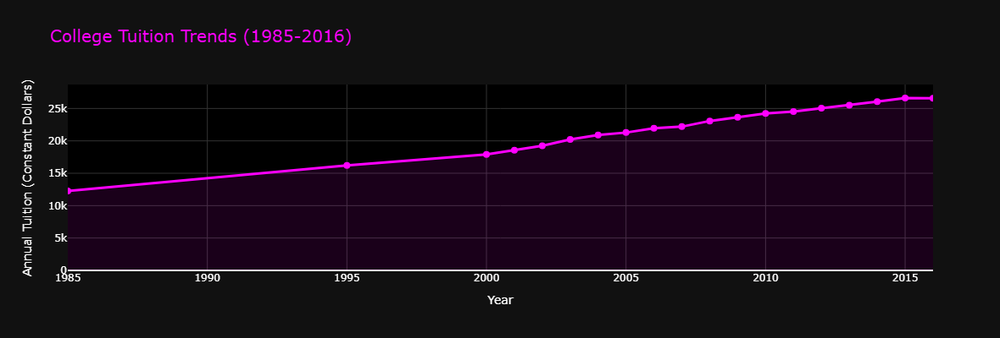
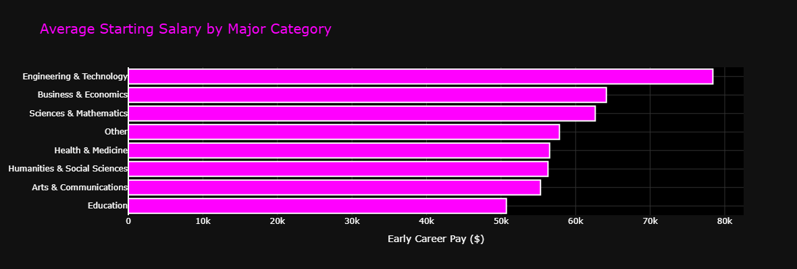
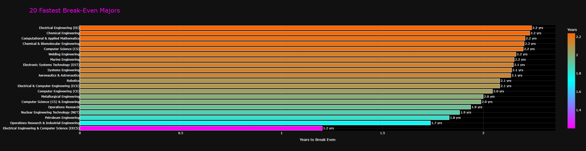
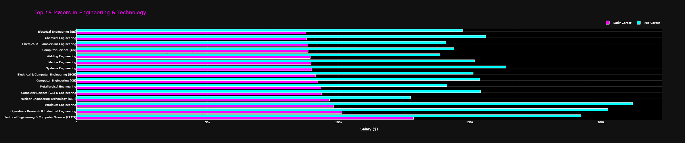
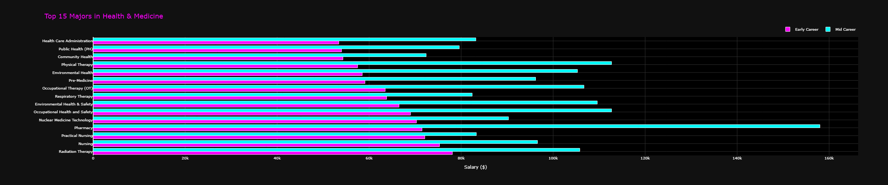
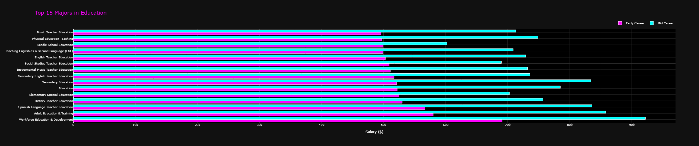
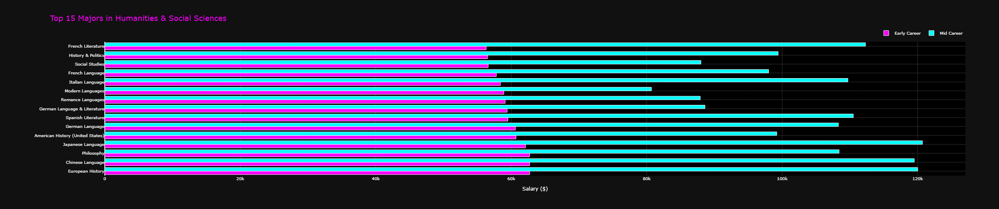
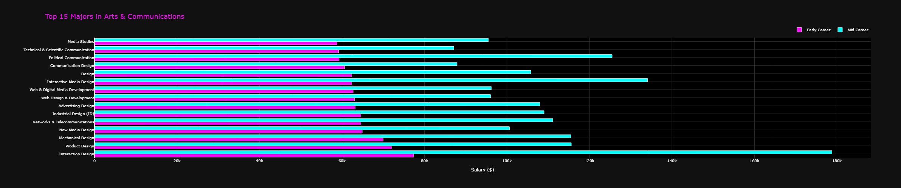

COLLEGE ROI DASHBOARD
Analyzing the Return on Investment of Different College Majors
About This Dashboard
This interactive data visualization tool helps students make informed decisions about college majors by analyzing the financial return on investment of different fields of study.
Built with Python, Dash, and Plotly, the dashboard features:
- Historical Tuition Analysis: Tracks college cost increases from 1985-2016
- Salary Comparison: Early and mid-career pay for 763 different majors
- ROI Calculator: Interactive tool showing break-even timelines
- Best Value Analysis: Identifies majors with fastest financial return
Note: The full interactive dashboard is a Python Dash application that runs locally.
This page provides an overview of the project and key findings through static visualizations.
To experience the interactive features, download the code and run python app.py.
Dashboard Visualizations
College Tuition Trends (1985-2016)
College tuition has increased 117% over three decades, growing from $12,274/year in 1985 to $26,593/year in 2016. This growth rate significantly exceeds inflation, with total 4-year costs now averaging $106,372.
Average Starting Salary by Major Category
Engineering & Technology leads with $78K average starting salary, followed by Business & Economics at $64K. Education majors have the lowest starting salaries at around $47K, despite requiring similar educational investment.
20 Fastest Break-Even Majors
STEM fields dominate the fastest break-even times. Electrical Engineering (EECS) leads at just 1.2 years, while most engineering majors break even within 2-3 years. This demonstrates the strong financial return of technical degrees.
Engineering & Technology - Top 15 Majors
Petroleum Engineering offers the highest salaries in this category, with mid-career pay exceeding $200K. Electrical Engineering and Chemical Engineering also show strong earning potential with significant salary growth from early to mid-career.
Business & Economics - Top 15 Majors

Quantitative Business Analysis and Applied Economics lead the business category with mid-career salaries approaching $160K. Management Information Systems (MIS) also shows strong returns, demonstrating the value of technical business skills.
Health & Medicine - Top 15 Majors
Pharmacy leads health-related majors with mid-career salaries over $160K. Occupational Therapy and Physical Therapy show solid earning potential, while Community Health fields have lower but stable salaries with strong job meaning.
Education - Top 15 Majors
Education majors show the longest break-even times (10-12 years) and lowest starting salaries. However, these fields offer high job satisfaction and stability. Spanish Teacher Education and Workforce Education show slightly higher earning potential.
Humanities & Social Sciences - Top 15 Majors
Spanish Literature and Chinese Language lead humanities with mid-career salaries around $120K, demonstrating the value of language skills in global business. History & Political Science also show strong mid-career growth.
Arts & Communications - Top 15 Majors
Interaction Design leads the arts category with mid-career pay exceeding $180K, showing the high demand for UX/UI skills. Industrial Design and Web Design & Development also offer strong returns compared to traditional arts degrees.
Key Findings
Fastest Break-Even Majors
- EECS: 1.2 years
- Operations Research: 1.7 years
- Petroleum Engineering: 1.8 years
- Nuclear Engineering: 1.9 years
- Computer Engineering: 2.0 years
Break-Even by Category
- Engineering: 3 years
- Business: 5 years
- Sciences: 6 years
- Humanities: 7 years
- Arts: 8 years
- Education: 12 years
Tuition Growth
- 1985: $12,274/year
- 2016: $26,593/year
- Growth: 117% increase
- Above inflation rate
- 4-year total: $106,372
Top Earning Fields
- Engineering: $78K avg
- Business: $64K avg
- Sciences: $63K avg
- Health: $57K avg
- Humanities: $56K avg
ROI Insights
- Engineering majors break even fastest
- Education takes longest but high job meaning
- Mid-career pay doubles for many fields
- STEM dominates top 20 ROI majors
Data Methodology
- 763 majors analyzed
- Compares to $40K HS grad baseline
- Uses 2016 average tuition
- Inflation-adjusted dollars
- National averages
Technical Implementation
The dashboard demonstrates professional data science workflows including:
- Data Cleaning: Processing 763 majors with salary data parsing and categorization
- Feature Engineering: Calculating ROI metrics, break-even timelines, and lifetime earnings
- Interactive Visualization: Dash callbacks for dynamic chart updates based on user selection
- Color Coding: Neon magenta (#ff00ff) theme for Project 2 branding consistency
- Responsive Design: Mobile-friendly layout with flexbox and grid